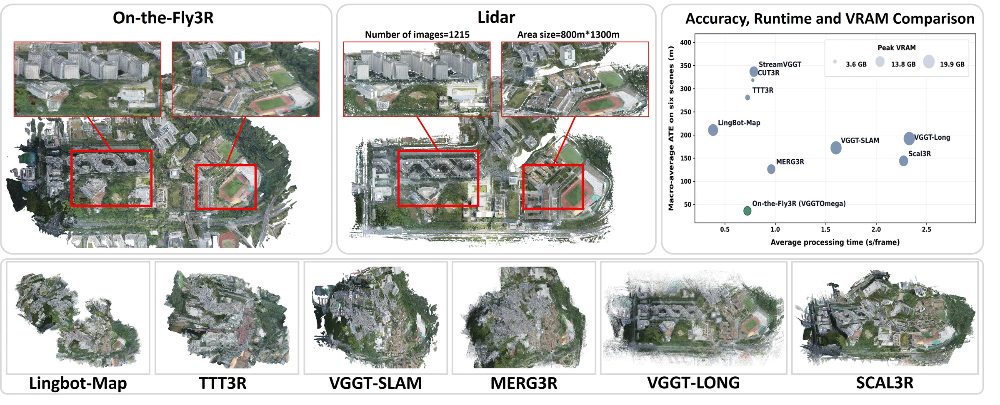
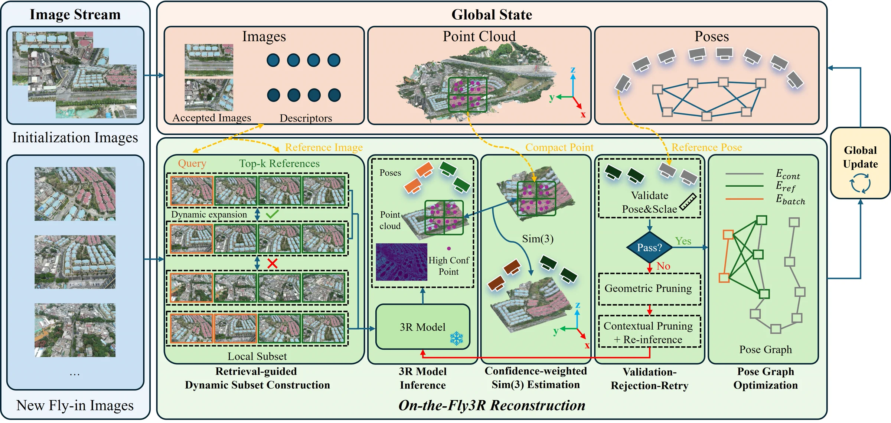
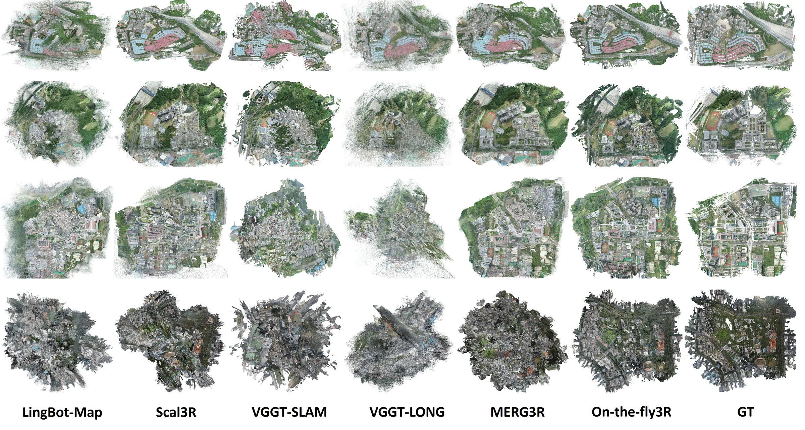

Large-scale UAV reconstruction
On-the-Fly3R
Towards Robust Online 3D Reconstruction with Feed-Forward 3R Models for Large-Scale UAV Scenarios
School of Geodesy and Geomatics, Wuhan University
* Equal contribution † Corresponding authors
A training-free progressive framework that scales feed-forward 3D reconstruction models to large-scale, unordered or weakly ordered UAV imagery.

01 / Abstract
Abstract
While feed-forward 3D reconstruction (3R) offers efficient end-to-end modeling, its application in large-scale UAV mapping is hindered by the prohibitive memory cost of Transformer attention. Current scalable streaming 3R methods assume temporally and spatially continuous inputs, rendering them ineffective for the weakly ordered or unordered image streams common in cross-strip UAV operations.
To address this, we propose On-the-Fly3R, a training-free, progressive online 3D reconstruction framework for large-scale UAV images that upgrades various 3R backbones for large-scale UAV scenarios. Our method enables reconstruction from unordered inputs via retrieval-guided dynamic subset construction, which adaptively selects spatially relevant images. To further improve the robustness, a validation–rejection–retry mechanism is designed to guarantee global consistency, performing a pre-integration consistency check and automatically rejecting misaligned images and retrying with an alternative subset. Finally, inspired by VSLAM, pose graph optimization based on the retrieval loop closure is employed to mitigate camera drift.
Evaluations on several UAV benchmarks show that our On-the-Fly3R successfully scales various 3R models to over 5,000 images across square-kilometer UAV scenes, delivering substantially superior accuracy compared to several SOTA scalable 3R methods.
02 / Method

Retrieve
Select co-visible references from the established global map.
Reconstruct
Run a frozen 3R model on a compact local subset.
Validate & retry
Check pose and scale consistency; prune unreliable references when needed.
Optimize
Use retrieval loop closures to reduce accumulated camera drift.
03 / Results
Large scenes, consistent geometry
Qualitative comparisons on the weakly ordered GauU-SceneV2 benchmark. Videos are synchronized rotations of the reconstructed point clouds.
04 / Results
Results
18.56 m
Macro-average ATE on the common six-scene frame set with Pi3x.
3.85 m
Mean Chamfer distance across six outdoor scenes with Pi3x.
| Method | ATE (m) ↓ | CD (m) ↓ | Time (s/frame) ↓ | Peak VRAM (GB) ↓ |
|---|---|---|---|---|
| LingBot-Map | 210.88 | 18.07 | 0.382 | 18.40 |
| Scal3R | 144.30 | 25.54 | 2.272 | 14.38 |
| VGGT-SLAM | 172.38 | 13.44 | 1.602 | 21.46 |
| VGGT-Long | 192.20 | 18.97 | 2.328 | 19.87 |
| MERG3R | 126.49 | 16.41 | 0.959 | 16.36 |
| On-the-Fly3R (Pi3) | 23.57 | 5.62 | 0.736 | 9.90 |
| On-the-Fly3R (Pi3x) | 18.56 | 3.85 | 0.814 | 17.56 |
| On-the-Fly3R (VGGT-Omega) | 36.19 | 4.85 | 0.723 | 9.90 |
ATE is macro-averaged from the six reported outdoor scene results. Point-cloud metrics and runtime are macro-averaged across completed scenes; memory is the maximum recorded peak.

05 / Citation
If you find this work useful
@article{shen2026onthefly3r,
title = {On-the-Fly3R: Towards Robust Online 3D Reconstruction
with Feed-Forward 3R Models for Large-Scale UAV Scenarios},
author = {Shen, Zhe and Lou, Liyuan and Yu, Yifei and Wang, Guanbo
and Ji, Quanjian and Wang, Xin and Zhan, Zongqian},
journal = {arXiv preprint arXiv:2609.00923},
year = {2026}
}